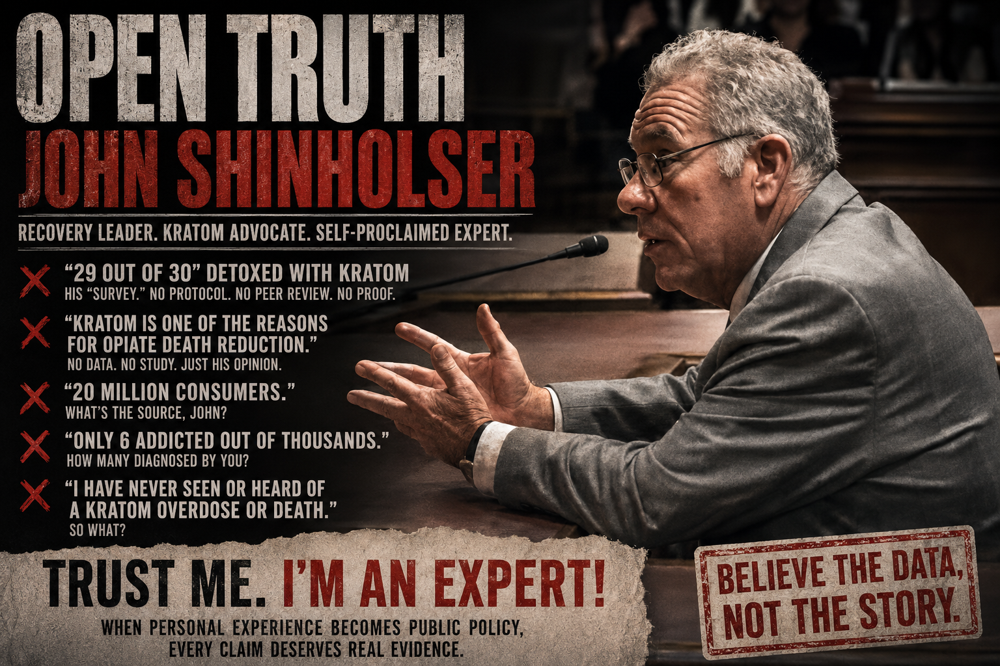

John Shinholser has an impressive recovery résumé.
Marine veteran. More than four decades sober. Co-founder of the McShin Foundation. Decades helping people with substance-use disorders. His 2023 testimony describes McShin as a major peer-recovery organization that has served thousands of participants. Shinholdertestimony1.pdf
WTVR recently described him as someone who has spent decades helping people battle addiction and who has now chosen the pro-kratom side of the debate.
Fine.
Then John introduces his scientific credentials himself:
Oh, good.
Peer review just got considerably cheaper.
Shinholser says McShin initially prohibited kratom after he researched FDA and DEA warnings. Shinholdertestimony1.pdf
Then he says he sought out "Kratom community leaders," studied the issue and became a:
in kratom's role in recovery. Shinholdertestimony1.pdf
That's quite a transformation.
One would hope something spectacular happened in between.
John says it did.
Shinholser says he helped conduct what he calls a "survey of 30 opiate addicts."
Except they weren't filling out questionnaires.
According to his testimony, 30 opioid-dependent people were offered sober living while being observed consuming kratom to relieve symptoms after suddenly stopping opioids.
He says 29 of 30 successfully detoxed in seven days. Shinholdertestimony1.pdf
That's not a survey.
If you're administering or facilitating use of a psychoactive substance while observing opioid withdrawal and then citing the result to lawmakers as evidence that the substance works, some questions seem appropriate.
His three-page testimony supplies none of that.
It does, however, explain the lone failure.
Participant number 30, Shinholser says, "ran off because he had plenty of money and a girl he wanted to be with." Shinholdertestimony1.pdf
Shinholser goes further.
He says his observations occurred before:
"Proving" is doing heroic work there.
His testimony does not identify an FDA-approved kratom treatment for opioid use disorder.
It doesn't provide a randomized controlled trial establishing his 29-of-30 claim.
It doesn't provide clinical guidelines recommending kratom detoxification.
It doesn't provide his own published study.
It provides John.
And John has seen things.
By 2025, Shinholser's claims had become even bolder.
In South Dakota testimony, where he identified himself as advocacy director of American Veterans for Kratom Safe, he presented as a "pertinent fact" that:
He made essentially the same claim in North Dakota.
That's not a modest statement.
That's a population-level causal claim about the American opioid mortality crisis.
Where is the evidence establishing that kratom caused part of the decline in opioid deaths?
His testimony doesn't provide it.
The same testimony confidently tells legislators there are "upward 20 million adult consumers" and "very few underage/teen consumers."
Again:
John doesn't burden legislators with such clutter.
The numbers arrive already housebroken.
His 2023 Ohio testimony offers another gem.
Shinholser says that among the thousands of kratom consumers he has seen:
Six.
Not approximately six.
Not a prevalence estimate with confidence intervals.
Six.
But the answer is six.
Shinholser concludes his Ohio testimony by saying:
He isn't Virginia's medical examiner.
He isn't the Virginia Department of Health.
He isn't a poison center surveillance system.
He isn't reviewing every toxicology report in the Commonwealth.
"I've never heard of it" is perfectly useful at a neighborhood barbecue.
It becomes considerably less impressive when discussing drug mortality with legislators.
Shinholser says he finds it "very disturbing" that Suboxone doctors are concerned with prescribing their specialty drug, contrasting them with primary-care physicians he says encourage patients to research kratom. Shinholdertestimony1.pdf
This comparison deserves its own moment.
So yes, doctors treating opioid use disorder prescribe an approved medication.
The scandal remains elusive.
John's alternative appears to involve people researching kratom themselves.
This isn't merely a recovery professional casually offering observations anymore.
In later legislative testimony, Shinholser identifies himself as:
His 2025 testimony doesn't merely support access. It declares kratom one reason opioid deaths are declining, describes it as preferable to more harmful drugs, and urges passage of Kratom Consumer Protection Acts.
Meanwhile, Ohio's official legislative record confirms that Shinholser appeared as a proponent of SB 103 alongside American Kratom Association representative Mac Haddow and other kratom proponents.
That's useful context.
John Shinholser isn't simply reporting what he observed at McShin.
He's advocating a policy position.
Nothing wrong with advocacy.
Just don't confuse it with a clinical trial.
John Shinholser has every right to talk about recovery.
After decades in the field, legislators should listen to his experience.
But experience doesn't come with a transferable medical license.
His testimony asks policymakers to accept an extraordinary collection of claims:
Shinholser himself supplied the perfect headline:
Great.
Then show us.
Because legislators aren't being asked whether John Shinholser has helped people recover.
He plainly has extensive recovery experience.
They're being asked to make drug policy.
And for that, "trust me" is not a methodology.
The documents and images below are presented so readers can examine the source material directly. Descriptions summarize the contents; readers are encouraged to review the underlying records themselves.
{kind=link}
{kind=link}
{kind=link}
{kind=link}
{kind=link}